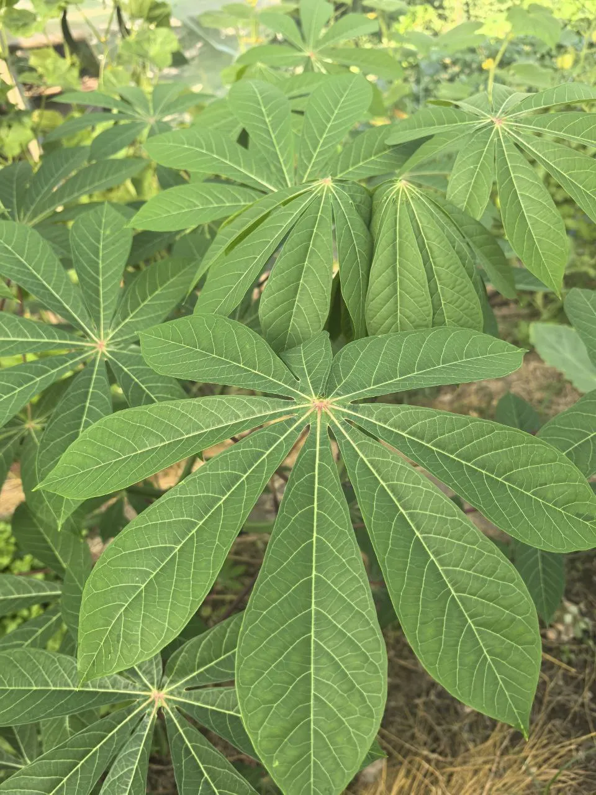
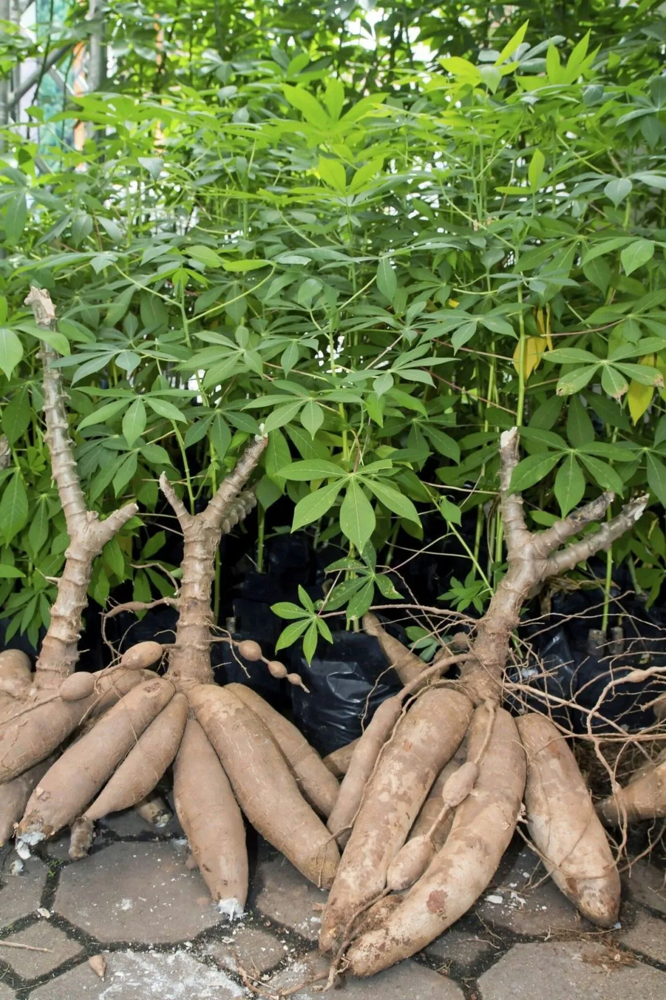

Кассава — третий по значимости источник углеводов в тропиках после риса и кукурузы.
Преимущества культуры для вашего участка.
Маниок в разные сезоны: от всходов до сбора урожая.


Всё, что нужно знать о культуре: от посадки до хранения.
Маниок съедобный (Manihot esculenta) — клубнеплодное растение семейства молочайные, имеющее огромное значение для питания более 500 млн человек.
Является третьим по величине источником пищевых углеводов в тропиках после риса и кукурузы.
Сырые корнеплоды маниока токсичны из-за цианогенных гликозидов. Их необходимо готовить: очищать, измельчать, замачивать и варить.
Выращивается из черенков стебля. Любит тёпло, солнечные места и хорошо дренированную почву.
Нет, сырые корнеплоды токсичны. Их нужно обязательно варить или жарить.
Свежие клубни хранятся недолго. Их можно замораживать, сушить или перерабатывать в муку.
Маниок богат углеводами и является основным продуктом питания в многих тропических странах.
Посадочный материал из коллекции Batatchudo и рекомендации по выращиванию.